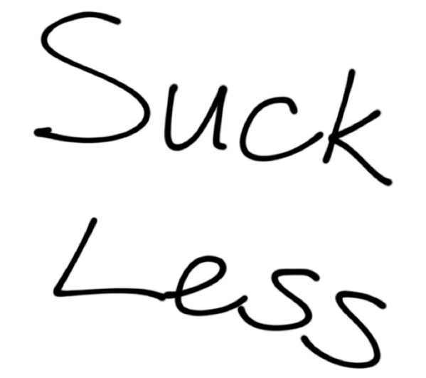
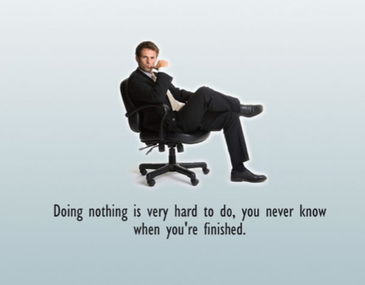

This is a User Experience (UX) course
This material is meant to teach the practice of being a user experience professional as I see it. It's meant to cover the basic concepts that are core to the profession. There are sections which explain the documents that are normally produced by UX professionals. I have tried to stay away from specific tools because you should focus more on the core concepts first.
I hope to continually refine what you see here in order to make it more timely, more useful, and more practical. Some links and videos might be broken. Let me know if you see something that confuses you, or that you disagree with completely - it makes for a great discussion over coffee or a beer.
I enjoy teaching this material, and I hope you get something out of it too.
Introduction and Expectations
Who are you?
Who am I?
Enough about you; let's talk about me. My career looks like this: Human Resources — IT — Blast Radius — Startup — Freelance (Teaching) — iQmetrix (Teaching). I have been in the web industry since 2000. I have worked for clients such as...

What do you expect from this material?
Do you have great expectations?
What do I expect you to get out of it?
We are here to learn about the field of user experience. We will learn how to gather and analyze some information. We will use tools to organize it all. Then we'll create digital design documents to plan what and how to build our digital experiences. We will talk mostly about websites, but will also discuss app UX and even non-screen UX.
We can make it even simpler...

How are going to suck less? By looking at a lot of user experiences.

Concepts vs. aesthetics
This course is not primarily about the aesthetics of your websites/digital branding work. This course is about concepts of usability, good navigation principles, information design (including hierarchies that you would normally see on site maps and schematics), how to communicate priority of information on a screen. That said, if your designs have some serious aesthetic flaws in my opinion, then I will give you that as part of my critiques. I'll definitely point out when the aesthetic choices start affecting usability.
What should you expect from me?
I will aim to deliver the material in a clear, and informative way. When explaining a concept, I will always try to pull in my experience in the industry, or I will reference the experiences of others (including yourselves). This material is not theoretical - it is applied. And the best way to teach applied material, in my opinion, is to tell stories from the working world.
I will aim to be available to answer questions not only when we are together, but in virtual space too. I sometimes do this with video chats (Google Hangouts for example) or email.
What I expect from you
Be on time
This shows that we respect each other. It's important.

Participate
You and your peers and even I will get more out of this experience if you participate. You paid good money to be here. The best way to get the most value for that money is to participate.

Spelling and grammar matter
How do I feel about typos and spelling errors? Many other people have summarized my feelings on the issue. Let's look at a few...
Regarding typos: Your Design Portfolio Has 10 Mistakes (see number 9)
Regarding spelling errors: Learn Too F***ing Spell
Here is a series of Oatmeal cartoons that should help you write in English:
Deadlines matter
20% will be deducted from the assignment grade for every day that an assignment is late, unless prior arrangements are made with me.
Fail fast. Fail cheap. Fail often
This means that you should come and show me work in progress. You should ask me questions as you work through problems; however, I cannot make you do this. I am assuming you are a grown up and you will make these choices on your own. I will remind you that showing me work in progress is a good idea from time to time. You’ll learn more if you do it and your marks will improve.
Mostly, I expect you to put in effort
Here is Elizabeth Gilbert talking about it
Here is Ira Glass talking about it
Logistics and Housekeeping
- Office Hours
- My day job (and work travel)
- Software
- Textbooks